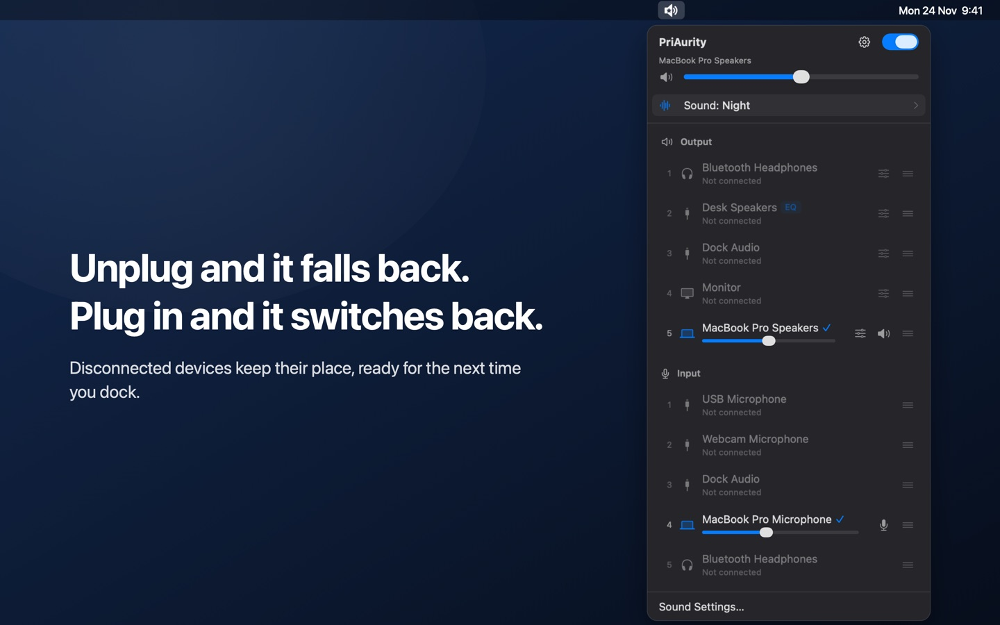
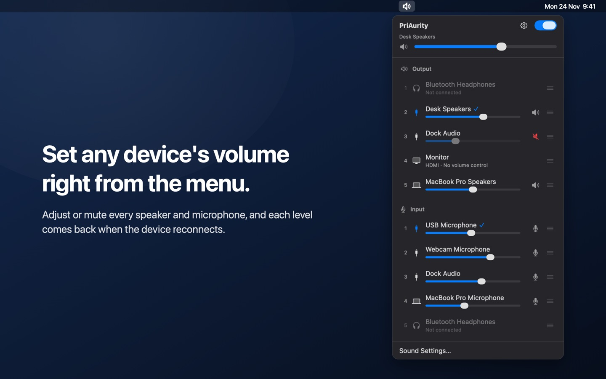

PriAurity
Audio device priority for your Mac
macOS falls back to your Mac's own speakers and microphone when you unplug a dock or headset, and often doesn't switch back when you plug it in again. PriAurity fixes that.
Rank your output and input devices from the menu bar, and PriAurity keeps the system on the highest-ranked device that's connected, switching automatically as hardware comes and goes.

Features
- Separate priority lists for output and input, reordered by dragging.
- Switches automatically when devices connect or disconnect, such as when you dock.
- Choosing a device in System Settings or Control Center moves it to the top of your list.
- Adjust or mute any device's volume right from the list, not just the one that's playing.
- Remembers each device's volume and mute, and restores them when it reconnects.
- Virtualise Volume gives working volume control to outputs that ignore their own, such as a dock's optical port, HDMI monitors, and Multi-Output and Aggregate Devices.
- Keeps alert sounds on the same device as your main output.
- Docks plugged into a different port keep their place in your list.
Screenshots

